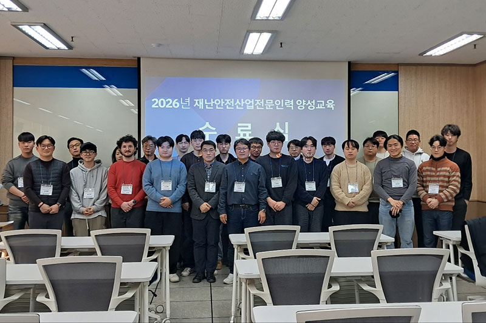
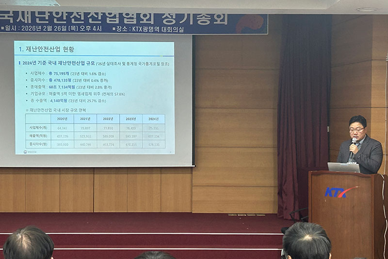
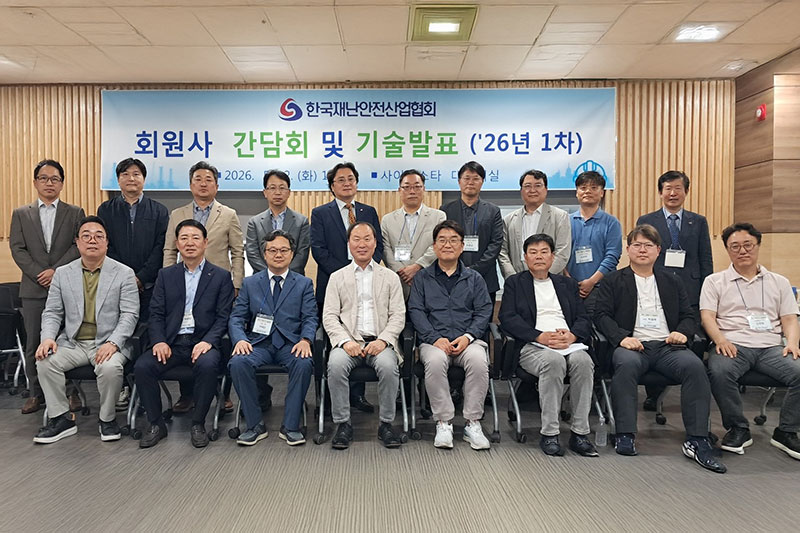
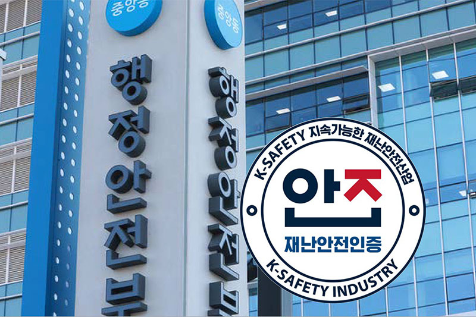
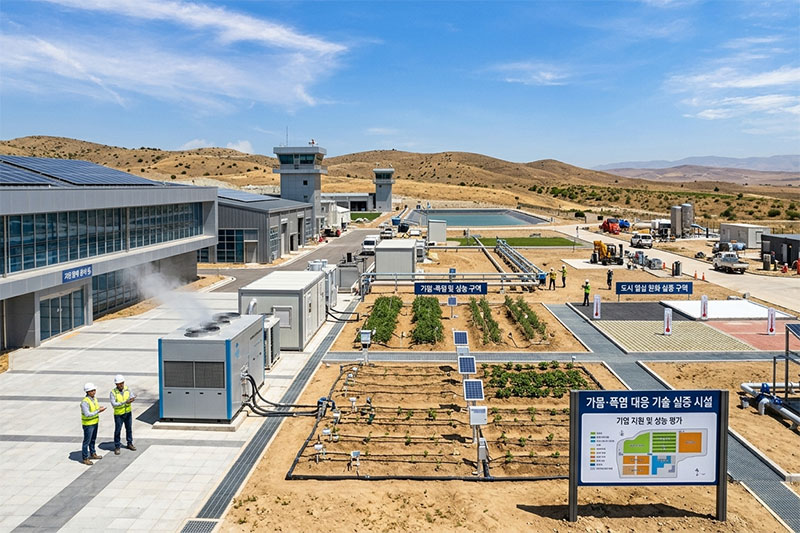
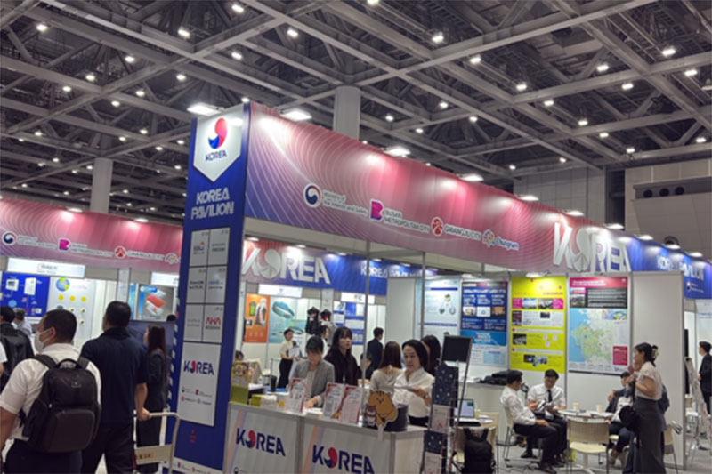
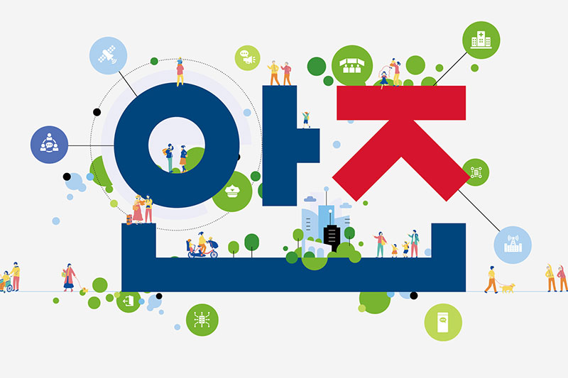
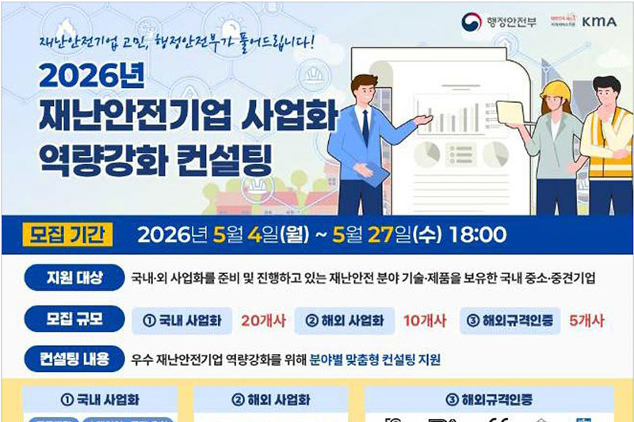

한국재난안전산업협회, 전문인력 양성교육 운영
한국재난안전산업협회는 2월 3일부터 5일까지 한국폴리텍대학 서울정수캠퍼스에서 제1차 재난안전산업 전문인력 양성교육을 운영했다. 교육은 재난안전산업 진흥정책, 연구개발, 기술사업화 등을 중심으로 구성되었으며, 산업계·연구기관·공공기관 종사자 27명이 수료했다. 협회는 앞으로도 실무형 인재 육성을 위한 전문인력 양성교육을 지속 확대해 나갈 계획이다.


2026년 정기총회 개최, AI·데이터 기반 발전 방향 제시
한국재난안전산업협회는 2월 26일 KTX 광명역 대회의실에서 임원·회원사·행정안전부 관계자 등 70여 명이 참석한 가운데 정기총회를 개최했다. 총회에서는 2025년 사업실적 및 결산, 2026년 사업계획·예산안이 의결되었으며, 재난안전산업 진흥 정책 방향도 논의되었다. 특히 행정안전부 장관 표창 수여와 함께 재난안전 AI·데이터위원회가 공식 출범하여, AI·데이터 기반 재난안전 관리체계 구축의 필요성이 강조되었다.
재난안전 AI·데이터 활용 기술발표회 개최
한국재난안전산업협회는 5월 12일 ‘재난안전 AI·데이터 활용의 현주소’를 주제로 기술발표회를 개최했다. 회원사·전문가·연구기관 관계자들이 참석한 가운데 영상분석, 데이터 기반 위험예측, 시설물 안전관리, 디지털 전환 사례 등이 소개되었다. 협회는 전문위원회 운영과 기술교류를 통해 회원사 간 협력을 확대하고 AI·데이터 기반 재난안전산업 혁신을 지속 지원할 예정이다.


2026년 상반기 재난안전제품 인증심사
행정안전부는 2026년 상반기 재난안전제품 인증심사를 통해 6월 말 14개 제품을 인증했다. 재난안전제품 인증제도는 2018년부터 운영되어 2026년 6월 말까지 총 269개 제품이 인증을 획득하였으며 현재 135건이 유효하다. 인증을 받으면 공공부문 수의계약, 조달우수제품 심사 가점, 인증마크 표시, 박람회 참가비 할인 등 다양한 혜택을 받을 수 있으며, 하반기 신청 접수도 예정되어 있다.
‘폭염 대응’ 재난안전산업 진흥시설 조성
행정안전부는 기후변화로 심화되는 폭염에 대응하기 위해 ‘폭염 특화 재난안전산업 진흥시설’ 조성 지역을 2월~3월 중 공모했다. 진흥시설은 기업의 기술·제품에 대한 성능시험·평가, 현장 실증, 사업화를 일괄 지원하는 거점 시설이다. 행정안전부와 선정 지방정부가 2026년부터 2028년까지 3년간 총 100억 원을 공동 지원할 예정이다.


재난안전기업 해외시장 진출 지원 통합한국관 참가기업 선정
행정안전부는 국내 재난안전기업의 해외 수출 경쟁력 강화를 위해 2026년 통합한국관 참가기업을 모집했다. 올해는 KFI 및 지방정부와 협업하여 ‘베트남 씨큐텍’과 ‘일본 리스콘 도쿄’에서 통합한국관을 운영할 예정이며, 심사를 거쳐 수출 의지 및 전시 적합성이 높은 기업을 선정하였다. 참여 기업에는 부스 임차료·물류비 지원과 수출 상담회 참여와 함께 현지 정부·공공기관 관계자를 대상으로 투자설명회 참여 기회를 제공하여 해외 진출 성과를 높일 계획이다.
제1호 국민안전산업펀드 조성 및 운용사 모집
행정안전부는 경찰청과 함께 첨단기술 기반 재난안전과 치안분야 기업의 성장을 위해 국민안전산업펀드를 최초로 조성한다. 정부 출자 100억 원(행정안전부 50억 원, 경찰청 50억 원)과 민간·지방정부 등 추가 출자 100억 원을 더해 총 200억 원 규모로 펀드를 조성할 예정이다. 행정안전부는 8월까지 운용사를 선정하고 연내 민간투자자를 모집하여 펀드를 결성한 후 성장 잠재력이 높은 기업에 본격적으로 투자할 계획이다.

‘2026 대한민국 안전기술대상’ 서면심사 결과 발표
행정안전부는 6월 4일 ‘2026 대한민국 안전기술대상’ 서면심사 결과를 발표했다. 이날 발표된 총 17건 중 종합심사를 거쳐 8점이 최종 수상작으로 선정된다. 대통령상 1점, 국무총리상 1점, 행정안전부장관상 6점이 수여되며, 최종 수상자에게는 총 2,000만 원의 상금 등 다양한 혜택이 제공된다. 종합심사에서는 전문가 심사위원회 심사와 함께 일반 국민이 참여하는 온라인 투표도 병행한다.
재난안전기업 사업화 역량 강화 컨설팅 참여기업 선정
행정안전부는 ‘2026년 재난안전기업 사업화 역량 강화 컨설팅’에 참여할 국내 기업을 모집했다. 유망 재난안전기업 35개사를 선정하여, 국내 및 해외 사업화와 해외인증 취득 지원을 위해 1:1 맞춤형 컨설팅을 지원한다. 해외인증 취득 지원의 경우 인증비·시험 접수비 등 일부도 함께 지원한다. 그간 컨설팅을 통해 사우디 아람코와의 시범 구매 계약, 매출 증가 등 참여기업의 다양한 성과 창출을 지원해왔다. 특히 올해는 투자 유치와 스케일업(Scale-up)을 희망하는 기업을 대상으로 IR 피칭을 추가적으로 지원하여 재난안전기업의 성장 발판을 마련할 계획이다.

지원사업
재난안전산업 지원사업은 ‘안전산업24’를 확인하세요!
안전산업 24 바로가기